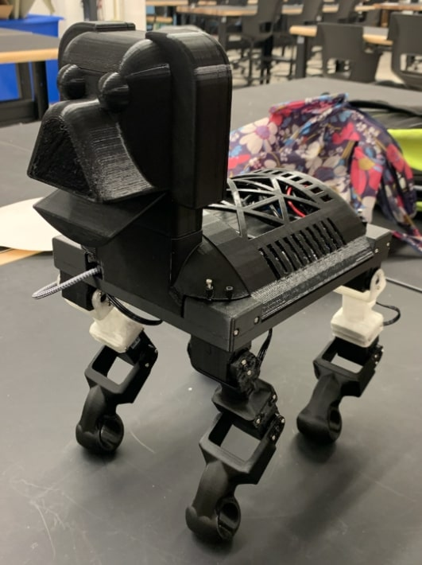

Robotics Studio Project
In this studio course, I explored robotics systems by designing and programming a series of mechanical and mechatronic devices. My final project focused on creating a 3-DOF robotic arm with a cylindrical configuration capable of performing pick-and-place operations. I built custom joints, programmed inverse kinematics, and implemented serial control using Arduino and Python.
Role: Lead Mechanical Designer, Embedded Systems Developer
Tools & Skills: SolidWorks, Arduino, Python, serial communication, 3D printing, motor control, inverse kinematics
← Back to Projects